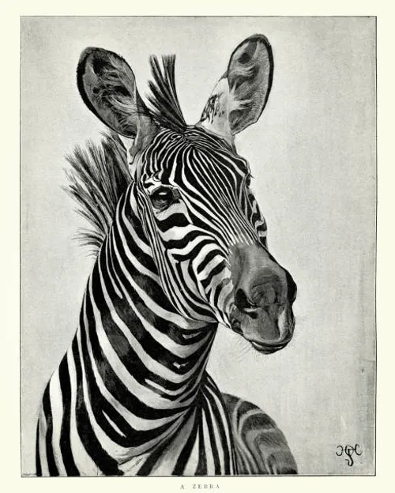

Media Library Collection
This page contains my favorite images, songs, videos, and online embeds.
Audio
Image
Video
Audio
Image

A Zebra
A pig
raindow and river in photo
forest
State of Unity
Taj Mahal
Video
Back to top